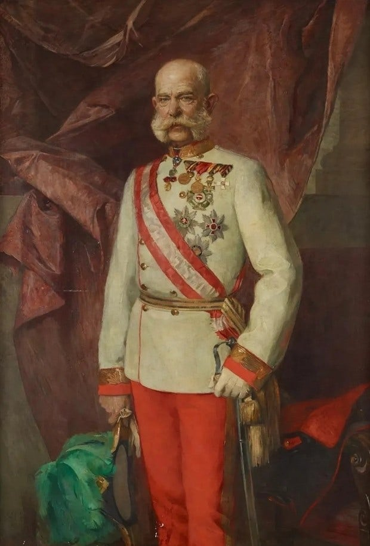
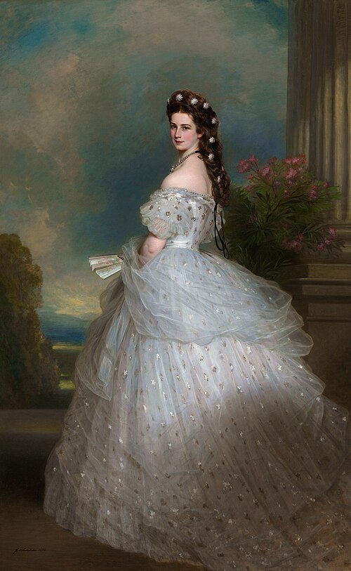

DIE DONAUMONARCHIE
THE IMPERIAL
COURT OF
AUSTRIA-HUNGARY
THE HOEBURG - VIENNA
DIE DONAUMONARCHIE
THE HOEBURG - VIENNA

KAISER VON ÖSTERREICH
1830 — 1916
Franz Joseph I ruled the Austrian Empire from 1848 until 1916. In 1867, he became King of Hungary, establishing the Austro-Hungarian Dual Monarchy.
DISCOVER HIS HISTORY →
KAISERIN VON ÖSTERREICH
1837 — 1898
Elisabeth, known as Sisi, became Empress of Austria in 1854. Her life was marked by her independence and complex relationship with the imperial court.
"Ich gehör nur mir."DISCOVER HER HISTORY →